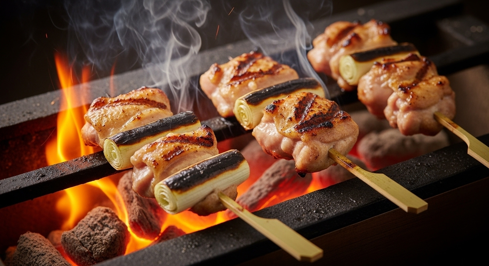
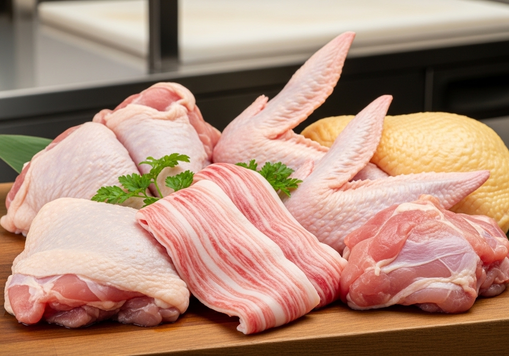
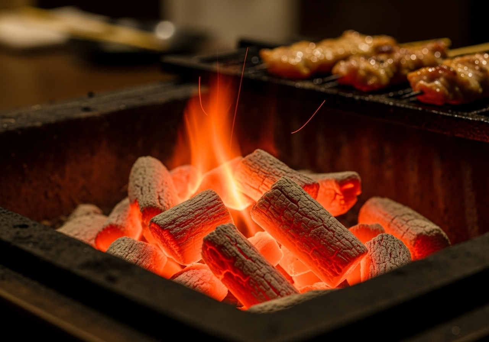
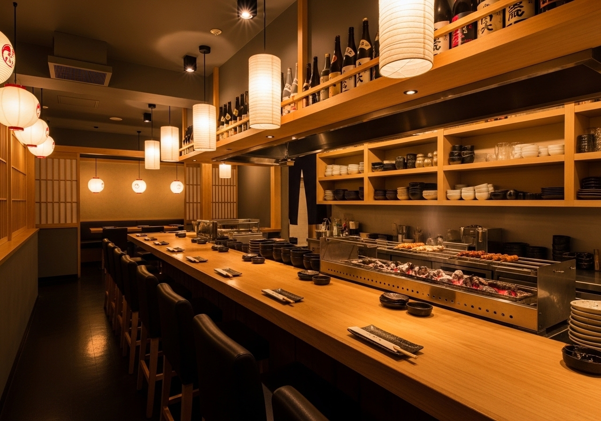

鳥縁のこだわり
厳選地鶏
産地直送の新鮮な地鶏のみを使用。旨味と弾力が違います。毎朝仕入れる新鮮な地鶏は、鮮度抜群で臭みがなく、噛むほどに広がる深い味わいが特徴です。
炭火焼き
備長炭の遠赤外線効果で、外はパリッと中はジューシーに。炭火ならではの香ばしさと、素材本来の旨味を最大限に引き出す伝統の焼き方です。
職人の技
20年以上の経験を持つ職人が、一串一串丁寧に焼き上げます。火加減、焼き時間、タレの絡め方まで、全てに妥協しない職人技をご堪能ください。
鳥縁の想い

産地直送の地鶏
当店では、契約農家から毎朝直送される新鮮な地鶏のみを使用しています。抗生物質を使わず、自然豊かな環境でのびのびと育てられた地鶏は、臭みがなく旨味が濃厚。鮮度にこだわり抜いた地鶏だからこそ、シンプルな塩焼きでも素材本来の美味しさを存分にお楽しみいただけます。

備長炭の炭火焼き
最高級の紀州備長炭を使用した炭火焼きは、遠赤外線効果により素材の芯までじっくりと火を通します。外はパリッと香ばしく、中はジューシーに仕上がる炭火焼きならではの食感と、炭火が生み出す独特の香ばしさは、ガス火では決して再現できない味わいです。

寛ぎの空間
和の趣を感じる落ち着いた店内で、ゆったりとお食事をお楽しみいただけます。カウンター席では職人の技を間近で見ながら、個室では大切な方との時間をプライベートに。様々なシーンでご利用いただける空間をご用意しております。